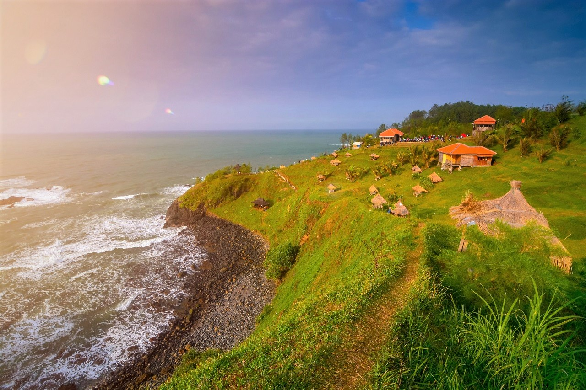
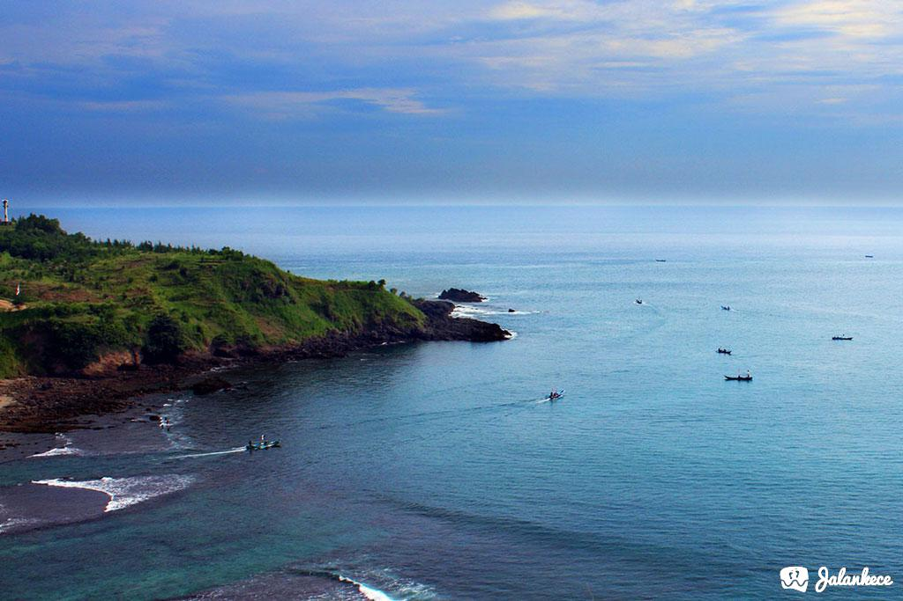
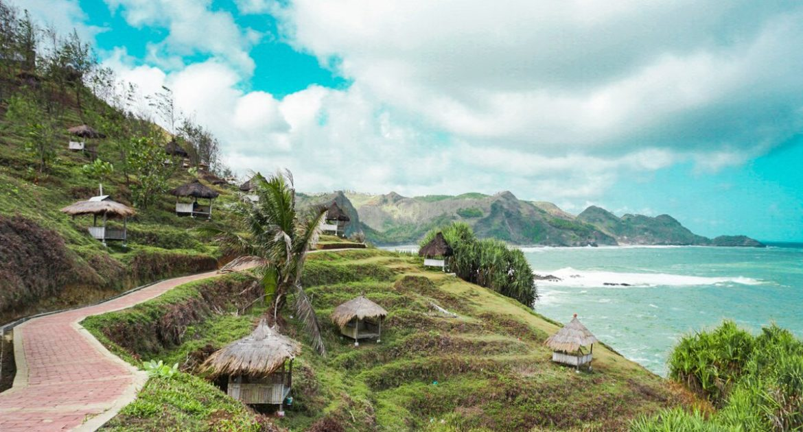
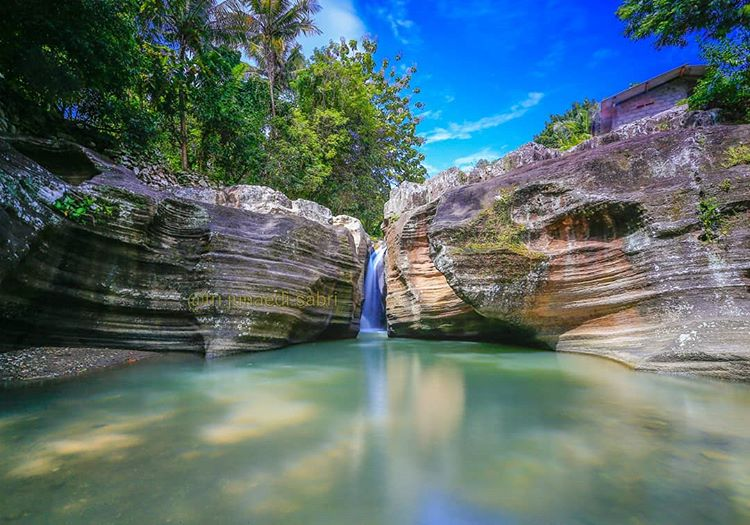
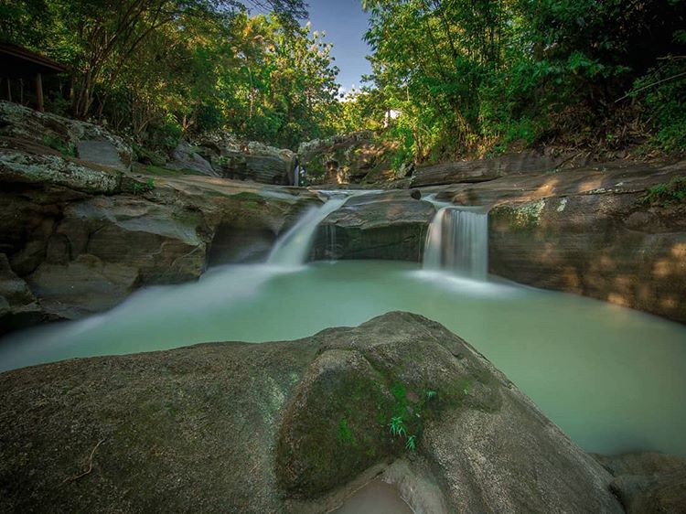
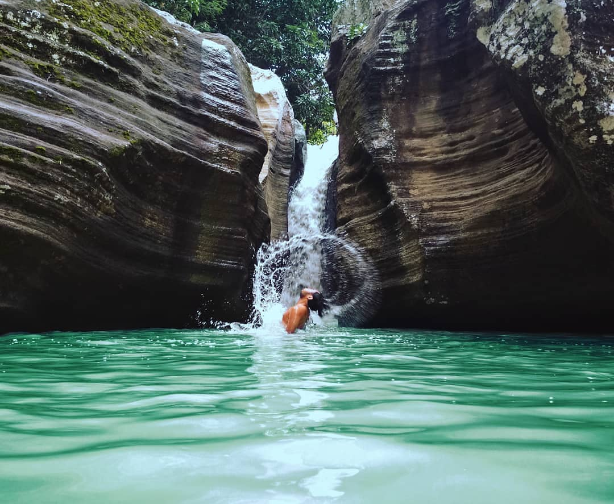
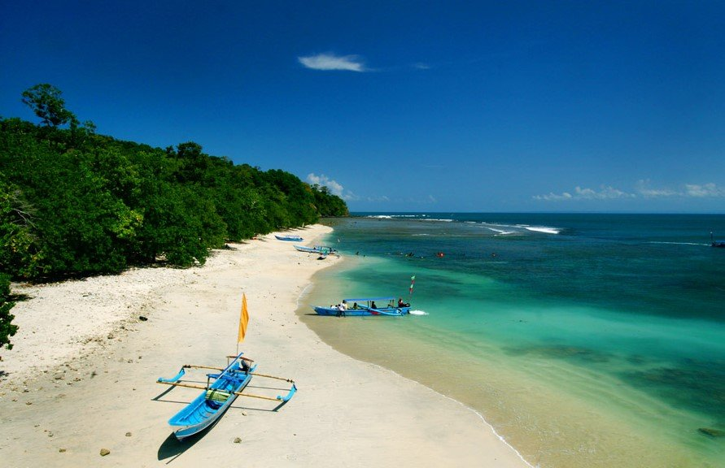
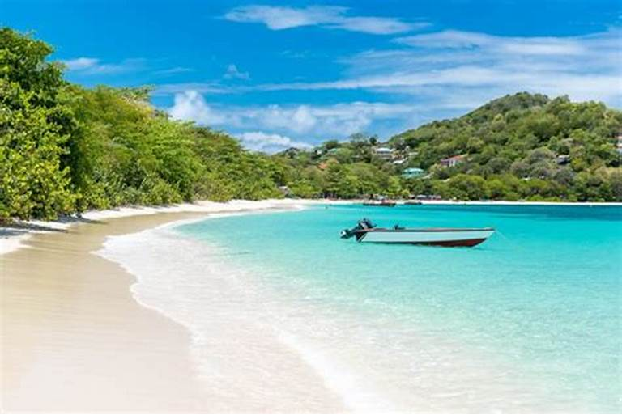
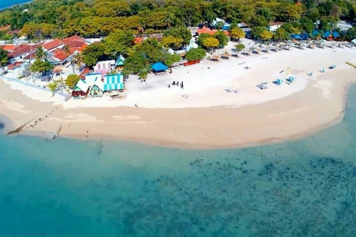

Semua tentang foto dan rekomendasi destinasi wisata paradise Indonesia sampai tempat hidden gems semua ada disini.



Pantai Menganti
Desa Karangduwur, Kecamatan Ayah, Kabupaten Kebumen, Jawa Tengah 54473, Indonesia.
Pemandangan perbukitan menghampar dari ujung ke ujung, dan uniknya perbukitan tersebut menjorok ke arah Pantai. Pemandangan Samudera lepas dengan pemandangan Pegunungan purba sangat memanjakan mata, sayang untuk dilewatkan. Pantai ini dapat menjadi salah satu pilihan yang menarik untuk destinasi Liburan Keluarga. Tunggu apa lagi Ayo liburan kesini.



Air Terjun Sampang
Jl. Juminahan, Sampang, Gedang Sari, Kab. Gunung Kidul, Yogyakarta 55863, Indonesia.
Pastinya tempat ini jarang di jamah oleh manusia, dengan nuansa alamnya yang masih sangat natural, hiden gems di Jogja ini bisa menjadi tempat healing atau menenangkan diri buat kalian yang sedang galau. Namun untuk sampai di destinasi, anda harus melewati rintangan alam yang harus di terjang. Tenang saja disana di sediakan tour guide untuk mengantar anda sampai ke wisata surga dunia.



Pulau Masalembo
Kepulauan Masalembo berada di Kabupaten Sumenep, Jawa Timur.
Dwi luar dari kisahnya yang angker sebagai Segitiga Bermuda versi Indonesia, Masalembo punya keindahan alam yang tidak bisa diragukan. Lokasinya yang dikelilingi perairan membuat kepulauan ini punya banyak pantai indah.
Kawasannya yang juga jarang dikenal membuat Masalembo masih sangat asri dan sepi wisatawan. Sangat cocok buat kamu yang ingin menikmati alam pantai yang memikat sambil mencari ketenangan.
Beberapa pantai andalan yang wajib dikunjungi ketika menyambangi Masalembo adalah Pantai Masna, Cemara, dan Sembilan Gili Genting. Lautnya yang jernih membiru berteman pasir putih bikin kamu betah sampai tak mau pulang